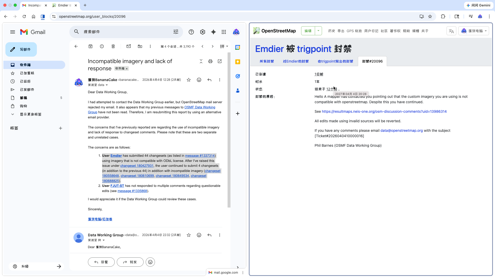

浏览OpenStreetMap贡献历史（区域内最新的变更集列表）时发现的显眼包。巨大的范围框，变更集comment带PLA，想不注意到都难。变更集imagery_used标签使用自定义底图，值对应的是高德。真的有人会用中国商业电子地图卫星影像来标注军事要素吗？
使用不兼容的底图能被发现，那大概率不是初犯。用程序遍历了此用户的所有变更集，发现有42个变更集使用了高德或天地图的底图，这个数字在其账号被禁止贡献时已经涨到了48个。
我最早于3月26日通过OpenStreetMap私讯向OpenStreetMap数据工作组提交了举报，后重新使用电子邮件提交了举报。举报理由是其使用了有版权限制且与OpenStreetMap所使用的ODbL许可证不兼容的底图。当然，明眼人都能看出我举报的真实目的是反制对方标注军事要素的行为，我只是找了一个对于数据工作组成员来说有效的理由罢了。既然OpenStreetMap“开放”，社区自然是不会反对用户上传军事要素数据，但如果是使用了不兼容ODbL许可证的数据，仲裁员就会表现的像是地图数据库被玷污了一样。

48个使用自定义底图的变更集中，同时使用天地图及高德地图网格的有7个；仅使用高德地图网格的有31个；仅使用天地图网格的有10个。